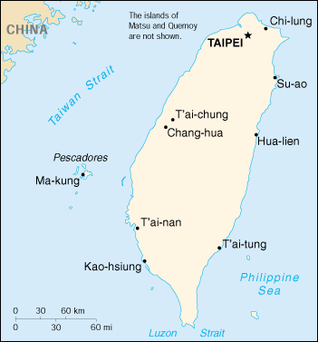

|
Taiwan | |
| Introduction Geography People Government Economy Communications Transportation Military Transnational Issues | ||
|  | ||
| Taiwan | Introduction | Top of Page |
| Background: | In 1895, military defeat forced China to cede Taiwan to Japan, however it reverted to Chinese control after World War II. Following the communist victory on the mainland in 1949, 2 million Nationalists fled to Taiwan and established a government using the 1947 constitution drawn up for all of China. Over the next five decades, the ruling authorities gradually democratized and incorporated the native population within its governing structure. Throughout this period, the island has prospered to become one of East Asia's economic "Tigers." The dominant political issue continues to be the relationship between Taiwan and China and the question of eventual reunification. |
| Taiwan | Geography | Top of Page |
| Location: | Eastern Asia, islands bordering the East China Sea, Philippine Sea, South China Sea, and Taiwan Strait, north of the Philippines, off the southeastern coast of China |
| Geographic coordinates: | 23 30 N, 121 00 E |
| Map references: | Southeast Asia |
| Area: |
total:
35,980 sq km
land: 32,260 sq km water: 3,720 sq km note: includes the Pescadores, Matsu, and Quemoy |
| Area - comparative: | slightly smaller than Maryland and Delaware combined |
| Land boundaries: | 0 km |
| Coastline: | 1,566.3 km |
| Maritime claims: |
exclusive economic zone:
200 NM
territorial sea: 12 NM |
| Climate: | tropical; marine; rainy season during southwest monsoon (June to August); cloudiness is persistent and extensive all year |
| Terrain: | eastern two-thirds mostly rugged mountains; flat to gently rolling plains in west |
| Elevation extremes: |
lowest point:
South China Sea 0 m
highest point: Yu Shan 3,997 m |
| Natural resources: | small deposits of coal, natural gas, limestone, marble, and asbestos |
| Land use: |
arable land:
24%
permanent crops: 1% permanent pastures: 5% forests and woodland: 55% other: 15% |
| Irrigated land: | NA sq km |
| Natural hazards: | earthquakes and typhoons |
| Environment - current issues: | air pollution; water pollution from industrial emissions, raw sewage; contamination of drinking water supplies; trade in endangered species; low-level radioactive waste disposal |
| Environment - international agreements: |
party to:
none of the selected agreements
signed, but not ratified: none of the selected agreements |
| Taiwan | People | Top of Page |
| Population: | 22,370,461 (July 2001 est.) |
| Age structure: |
0-14 years:
21.22% (male 2,470,270; female 2,276,108)
15-64 years: 69.97% (male 7,944,451; female 7,707,250) 65 years and over: 8.81% (male 1,034,230; female 938,152) (2001 est.) |
| Population growth rate: | 0.8% (2001 est.) |
| Birth rate: | 14.31 births/1,000 population (2001 est.) |
| Death rate: | 6 deaths/1,000 population (2001 est.) |
| Net migration rate: | -0.34 migrant(s)/1,000 population (2001 est.) |
| Sex ratio: |
at birth:
1.09 male(s)/female
under 15 years: 1.09 male(s)/female 15-64 years: 1.03 male(s)/female 65 years and over: 1.1 male(s)/female total population: 1.05 male(s)/female (2001 est.) |
| Infant mortality rate: | 6.93 deaths/1,000 live births (2001 est.) |
| Life expectancy at birth: |
total population:
76.54 years
male: 73.81 years female: 79.51 years (2001 est.) |
| Total fertility rate: | 1.76 children born/woman (2001 est.) |
| HIV/AIDS - people living with HIV/AIDS: | NA |
| HIV/AIDS - deaths: | NA |
| Nationality: |
noun:
Chinese (singular and plural)
adjective: Chinese |
| Ethnic groups: | Taiwanese (including Hakka) 84%, mainland Chinese 14%, aborigine 2% |
| Religions: | mixture of Buddhist, Confucian, and Taoist 93%, Christian 4.5%, other 2.5% |
| Languages: | Mandarin Chinese (official), Taiwanese (Min), Hakka dialects |
| Literacy: |
definition:
age 15 and over can read and write
total population: 86% (1980 est.); note - literacy for the total population has reportedly increased to 94% (1998 est.) male: 93% (1980 est.) female: 79% (1980 est.) |
| Taiwan | Government | Top of Page |
| Country name: |
conventional long form:
none
conventional short form: Taiwan local long form: none local short form: T'ai-wan former: Formosa |
| Government type: | multiparty democratic regime headed by popularly elected president |
| Capital: | Taipei |
| Administrative divisions: |
since in the past the authorities claimed to be the government of all China, the central administrative divisions include the provinces of Fu-chien (some 20 offshore islands of Fujian Province including Quemoy and Matsu) and Taiwan (the island of Taiwan and the Pescadores islands); note - the more commonly referenced administrative divisions are those of Taiwan Province - 16 counties (hsien, singular and plural), 5 municipalities* (shih, singular and plural), and 2 special municipalities** (chuan-shih, singular and plural); Chang-hua, Chia-i, Chia-i*, Chi-lung*, Hsin-chu, Hsin-chu*, Hua-lien, I-lan, Kao-hsiung, Kao-hsiung**, Miao-li, Nan-t'ou, P'eng-hu, P'ing-tung, T'ai-chung, T'ai-chung*, T'ai-nan, T'ai-nan*, T'ai-pei, T'ai-pei**, T'ai-tung, T'ao-yuan, and Yun-lin; the provincial capital is at Chung-hsing-hsin-ts'un
note: Taiwan uses the Wade-Giles system for romanization |
| National holiday: | Republic Day (Anniversary of the Chinese Revolution), 10 October (1911) |
| Constitution: | 1 January 1947, amended in 1992, 1994, 1997, and 1999 |
| Legal system: | based on civil law system; accepts compulsory ICJ jurisdiction, with reservations |
| Suffrage: | 20 years of age; universal |
| Executive branch: |
chief of state:
President CHEN Shui-bien (20 May 2000) and Vice President Annette LU (since 20 May 2000)
head of government: Premier (President of the Executive Yuan) CHANG Chun-hsiung (since NA October 2000) and Vice Premier (Vice President of the Executive Yuan) LAI In-jaw (since NA October 2000) cabinet: Executive Yuan appointed by the president elections: president and vice president elected on the same ticket by popular vote for four-year terms; election last held 18 March 2000 (next to be held NA March 2004); premier appointed by the president; vice premiers appointed by the president on the recommendation of the premier election results: CHEN Shui-bien elected president; percent of vote - CHEN Shui-bien (DPP) 39.3%, James SOONG (independent) 36.84%, LIEN Chan (KMT) 23.1%, HSU Hsin-liang (independent) 0.63%, LEE Ao (CNP) 0.13% |
| Legislative branch: |
unicameral Legislative Yuan (225 seats - 168 elected by popular vote, 41 elected on the basis of the proportion of nationwide votes received by participating political parties, eight elected from overseas Chinese constituencies on the basis of the proportion of nationwide votes received by participating political parties, eight elected by popular vote among the aboriginal populations; members serve three-year terms) and unicameral National Assembly (300 seats, note - total number of seats has been reduced from 334 to 300 since the last election; members are elected by proportional representation based on the election of the Legislative Yuan and serve four-year terms)
elections: Legislative Yuan - last held 5 December 1998 (next to be held NA December 2001); National Assembly - last held 23 March 1996 (next to be held NA June 2002) election results: Legislative Yuan - percent of vote by party - KMT 46%, DPP 29%, CNP 7%, independents 10%, other parties 8%; seats by party - KMT 123, DPP 70, CNP 11, independents 15, other parties 6; subsequent to the election there have been some changes in the distribution of seats in the Legislative Yuan due to new party formation and party defections, the new distribution is as follows - KMT 114, DPP 66, PFP 17, NP 9, other/independent 19; National Assembly - percent of vote by party - KMT 55%, DPP 30%, CNP 14%, other 1%; seats by party - KMT 183, DPP 99, CNP 46, other 6 |
| Judicial branch: | Judicial Yuan (justices appointed by the president with the consent of the National Assembly; note - beginning in 2003, justices will be appointed by the president with the consent of the Legislative Yuan) |
| Political parties and leaders: | Chinese New Party or CNP [HAU Lang-bin]; Democratic Progressive Party or DPP [Frank HSIEH, chairman]; Kuomintang or KMT (Nationalist Party) [LIEN Chan, chairman]; New Party or NP [LI Ching-hwa]; People First Party or PFP [James SOONG, chairman]; other minor parties |
| Political pressure groups and leaders: |
Taiwan independence movement, various business and environmental groups
note: debate on Taiwan independence has become acceptable within the mainstream of domestic politics on Taiwan; political liberalization and the increased representation of opposition parties in Taiwan's legislature have opened public debate on the island's national identity; a broad popular consensus has developed that Taiwan currently enjoys de facto independence and - whatever the ultimate outcome regarding reunification or independence - that Taiwan's people must have the deciding voice; advocates of Taiwan independence oppose the stand that the island will eventually reunify with mainland China; goals of the Taiwan independence movement include establishing a sovereign nation on Taiwan and entering the UN; other organizations supporting Taiwan independence include the World United Formosans for Independence and the Organization for Taiwan Nation Building |
| International organization participation: | APEC, AsDB, BCIE, ICC, ICFTU, IFRCS, IOC, WCL, WTrO (observer) |
| Diplomatic representation in the US: | none; unofficial commercial and cultural relations with the people of the US are maintained through a private instrumentality, the Taipei Economic and Cultural Representative Office (TECRO) in the US with headquarters in Taipei and field offices in Washington and 12 other US cities |
| Diplomatic representation from the US: | none; unofficial commercial and cultural relations with the people on Taiwan are maintained through a private corporation, the American Institute in Taiwan (AIT), which has its headquarters in Rosslyn, Virginia (telephone: [1] (703) 525-8474 and FAX: [1] (703) 841-1385) and offices in Taipei at #7 Lane 134, Hsin Yi Road, Section 3, telephone [886] (2) 2709-2000, FAX [886] (2) 2702-7675, and in Kao-hsiung at #2 Chung Cheng 3rd Road, 5th Floor, telephone [886] (7) 224-0154 through 0157, FAX [886] (7) 223-8237, and the American Trade Center at Room 3208 International Trade Building, Taipei World Trade Center, 333 Keelung Road Section 1, Taipei 10548, telephone [886] (2) 2720-1550, FAX [886] (2) 2757-7162 |
| Flag description: | red with a dark blue rectangle in the upper hoist-side corner bearing a white sun with 12 triangular rays |
| Taiwan | Economy | Top of Page |
| Economy - overview: | Taiwan has a dynamic capitalist economy with gradually decreasing guidance of investment and foreign trade by government authorities. In keeping with this trend, some large government-owned banks and industrial firms are being privatized. Real growth in GDP has averaged about 8% during the past three decades. Exports have grown even faster and have provided the primary impetus for industrialization. Inflation and unemployment are low; the trade surplus is substantial; and foreign reserves are the world's fourth largest. Agriculture contributes 3% to GDP, down from 35% in 1952. Traditional labor-intensive industries are steadily being moved offshore and replaced with more capital- and technology-intensive industries. Taiwan has become a major investor in China, Thailand, Indonesia, the Philippines, Malaysia, and Vietnam. The tightening of labor markets has led to an influx of foreign workers, both legal and illegal. Because of its conservative financial approach and its entrepreneurial strengths, Taiwan suffered little compared with many of its neighbors from the Asian financial crisis in 1998-99. Growth in 2001 will depend largely on conditions in Taiwan's export markets and may be about 5%. |
| GDP: | purchasing power parity - $386 billion (2000 est.) |
| GDP - real growth rate: | 6.3% (2000 est.) |
| GDP - per capita: | purchasing power parity - $17,400 (2000 est.) |
| GDP - composition by sector: |
agriculture:
3%
industry: 33% services: 64% (1999 est.) |
| Population below poverty line: | 1% (1999 est.) |
| Household income or consumption by percentage share: |
lowest 10%:
NA%
highest 10%: NA% |
| Inflation rate (consumer prices): | 1.3% (2000 est.) |
| Labor force: | 9.8 million (2000 est.) |
| Labor force - by occupation: | services 55%, industry 37%, agriculture 8% (1999 est.) |
| Unemployment rate: | 3% (2000 est.) |
| Budget: |
revenues:
$42.74 billion
expenditures: $48.8 billion, including capital expenditures of $NA (2001 est.) |
| Industries: | electronics, petroleum refining, chemicals, textiles, iron and steel, machinery, cement, food processing |
| Industrial production growth rate: | 8% (2000 est.) |
| Electricity - production: | 139.676 billion kWh (1999) |
| Electricity - production by source: |
fossil fuel:
67.26%
hydro: 6.32% nuclear: 26.42% other: 0% (1999) |
| Electricity - consumption: | 129.899 billion kWh (1999) |
| Electricity - exports: | 0 kWh (1999) |
| Electricity - imports: | 0 kWh (1999) |
| Agriculture - products: | rice, corn, vegetables, fruit, tea; pigs, poultry, beef, milk; fish |
| Exports: | $148.38 billion (f.o.b., 2000) |
| Exports - commodities: | machinery and electrical equipment 51%, metals, textiles, plastics, chemicals |
| Exports - partners: | US 23.5%, Hong Kong 21.1%, Europe 16%, ASEAN 12.2%, Japan 11.2% (2000) |
| Imports: | $140.01 billion (c.i.f., 2000) |
| Imports - commodities: | machinery and electrical equipment 51%, minerals, precision instruments |
| Imports - partners: | Japan 27.5%, US 17.9%, Europe 13.6% (2000) |
| Debt - external: | $40 billion (2000) |
| Currency: | new Taiwan dollar (TWD) |
| Currency code: | TWD |
| Exchange rates: | new Taiwan dollars per US dollar - 33.082 (yearend 2000), 31.395 (yearend 1999), 32.216 (1998), 32.052 (1997), 27.5 (1996) |
| Fiscal year: | 1 July - 30 June (up to FY98/99); 1 July 1999 - 31 December 2000 for FY00; calendar year (after FY00) |
| Taiwan | Communications | Top of Page |
| Telephones - main lines in use: | 12.49 million (September 2000) |
| Telephones - mobile cellular: | 16 million (September 2000) |
| Telephone system: |
general assessment:
provides telecommunications service for every business and private need
domestic: thoroughly modern; completely digitalized international: satellite earth stations - 2 Intelsat (1 Pacific Ocean and 1 Indian Ocean); submarine cables to Japan (Okinawa), Philippines, Guam, Singapore, Hong Kong, Indonesia, Australia, Middle East, and Western Europe (1999) |
| Radio broadcast stations: | AM 218, FM 333, shortwave 50 (1999) |
| Radios: | 16 million (1994) |
| Television broadcast stations: | 29 (plus two repeaters) (1997) |
| Televisions: | 8.8 million (1998) |
| Internet country code: | .tw |
| Internet Service Providers (ISPs): | 8 (2000) |
| Internet users: | 6.4 million (2000) |
| Taiwan | Transportation | Top of Page |
| Railways: |
total:
4,600 km (519 km electrified)
narrow gauge: 4,600 km 1.067-m note: only 1,108 km of route length (including the electrified part) is used in common carrier service by the Taiwan Railway Administration; the remaining 3,492 km is dedicated to industrial use (1999) |
| Highways: |
total:
34,901 km
paved: 31,271 km (including 538 km of expressways) unpaved: 3,630 km (1998 est.) |
| Waterways: | NA |
| Pipelines: | petroleum products 3,400 km; natural gas 1,800 km (1999) |
| Ports and harbors: | Chi-lung (Keelung), Hua-lien, Kao-hsiung, Su-ao, T'ai-chung |
| Merchant marine: |
total:
167 ships (1,000 GRT or over) totaling 4,768,145 GRT/7,508,941 DWT
ships by type: bulk 45, cargo 29, combination bulk 1, container 65, petroleum tanker 17, refrigerated cargo 8, roll on/roll off 2 (2000 est.) |
| Airports: | 39 (2000 est.) |
| Airports - with paved runways: |
total:
35
over 3,047 m: 8 2,438 to 3,047 m: 9 1,524 to 2,437 m: 8 914 to 1,523 m: 7 under 914 m: 3 (2000 est.) |
| Airports - with unpaved runways: |
total:
4
1,524 to 2,437 m: 1 under 914 m: 3 (2000 est.) |
| Heliports: | 3 (2000 est.) |
| Taiwan | Military | Top of Page |
| Military branches: | Army, Navy (includes Marines), Air Force, Coastal Patrol and Defense Command, Armed Forces Reserve Command, Combined Service Forces |
| Military manpower - military age: | 19 years of age |
| Military manpower - availability: | males age 15-49: 6,575,689 (2001 est.) |
| Military manpower - fit for military service: | males age 15-49: 5,025,856 (2001 est.) |
| Military manpower - reaching military age annually: | males: 198,766 (2001 est.) |
| Military expenditures - dollar figure: | $8.042 billion (FY98/99) |
| Military expenditures - percent of GDP: | 2.8% (FY98/99) |
| Taiwan | Transnational Issues | Top of Page |
| Disputes - international: | involved in complex dispute over the Spratly Islands with China, Malaysia, Philippines, Vietnam, and possibly Brunei; Paracel Islands occupied by China, but claimed by Vietnam and Taiwan; claims Japanese-administered Senkaku-shoto (Senkaku Islands/Diaoyu Tai), as does China |
| Illicit drugs: | transit point for heroin and methamphetamine; major problem with domestic consumption of methamphetamine and heroin |
{kind=link}